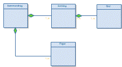

|
Her ligger foreløpig sammendrag til
noen av fagene jeg har (eller har hatt).
In140 - Systemering
Sammendrag av Schneiderman-boka
i In105. (Ikke komplett)
Jeg har også et sammendrag
av DTUI som jeg ikke har skrevet selv. Dette sammendraget
er mer kortfattende og er veldig punktvis og greit skrevet.
Tror faktisk dette skal være komplett. Sammendraget
er skrevet av Jannicke,
og kan lastes ned som en Word-fil.

Sammendrag
av "Applaying UML and Patterns". Fra kapittel
9 og utover så langt jeg kommer. Sammendraget er egentlig
ferdig skrevet, men jeg fikk aldri tid til å skrive
det inn på data. Mulig jeg kommer til å fortsette
en gang jeg kjeder meg. :o)
|